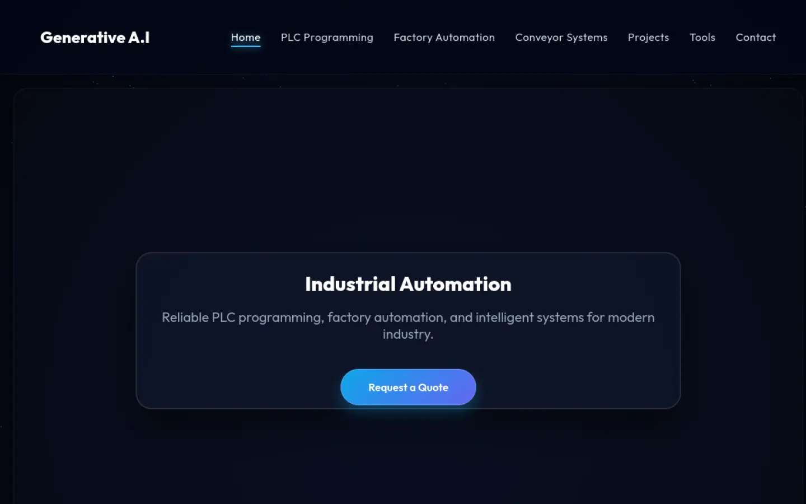
Selected work
Ideas made
real.
A glimpse of the considered digital systems we craft to give growing businesses a stronger next step.
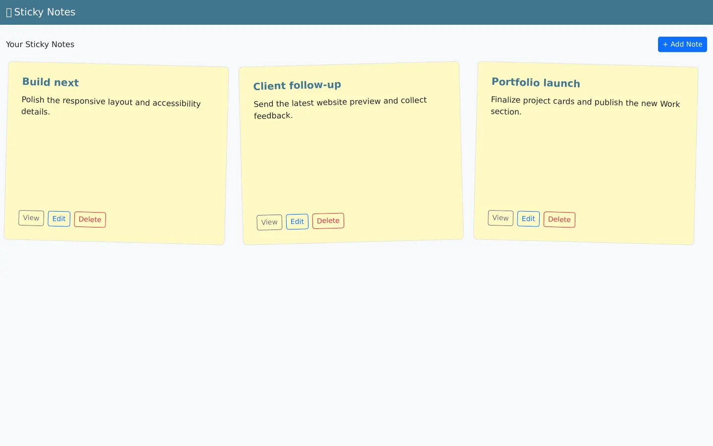
Django CRUD application
Sticky Notes Capstone
A Django application for creating, viewing, editing, and deleting notes, backed by models, forms, migrations, tests, and documentation.
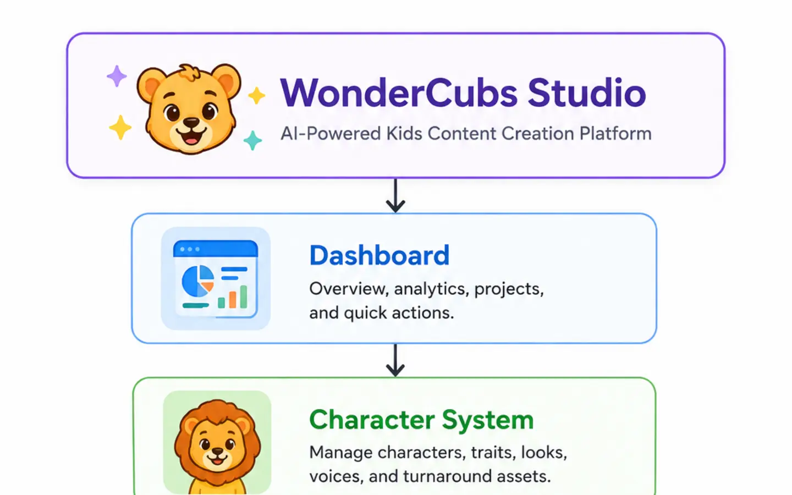
In Development
WonderCubs Studio — In Development
A Python desktop platform in development for character, prompt, project and workspace management. External AI-provider integration is planned.
Recent projects
Work you can explore.
Websites, tools and applications built across retail, services, automation and creative work.
Live Websites
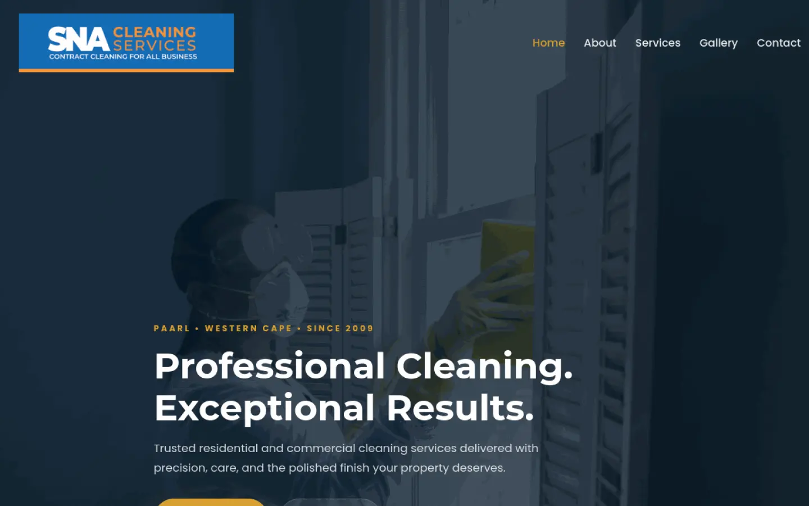
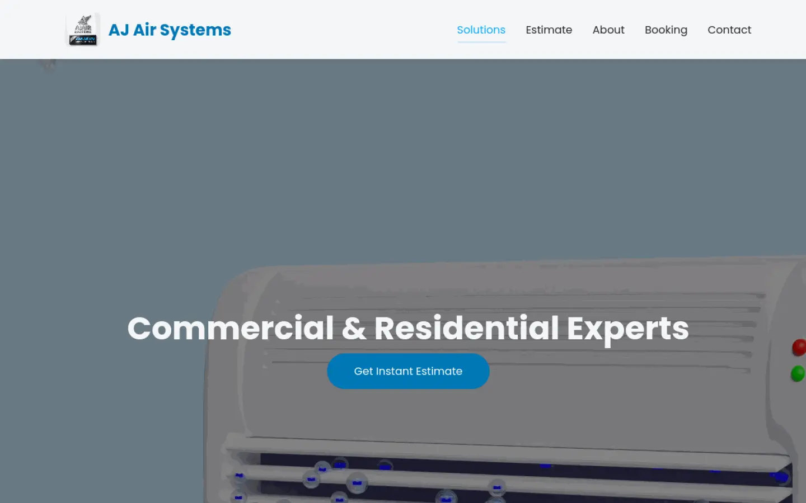
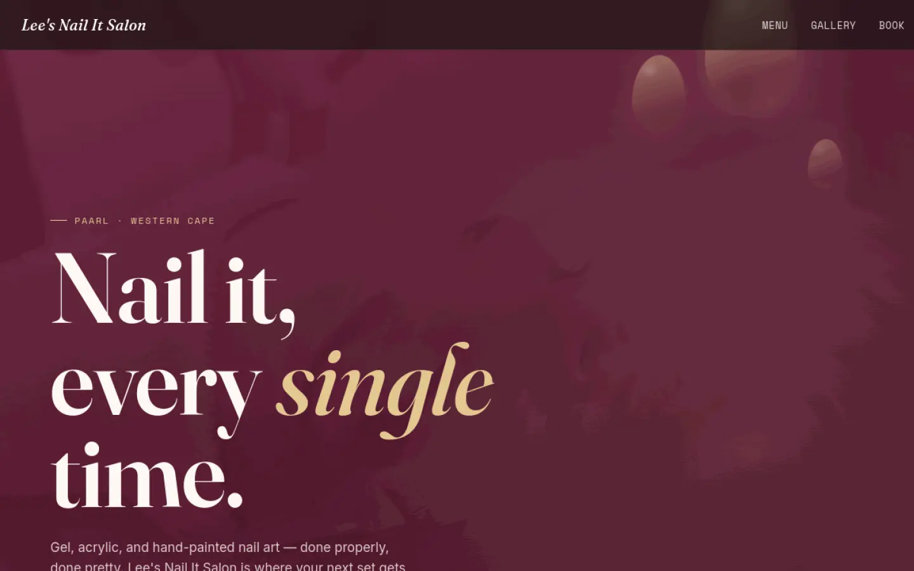
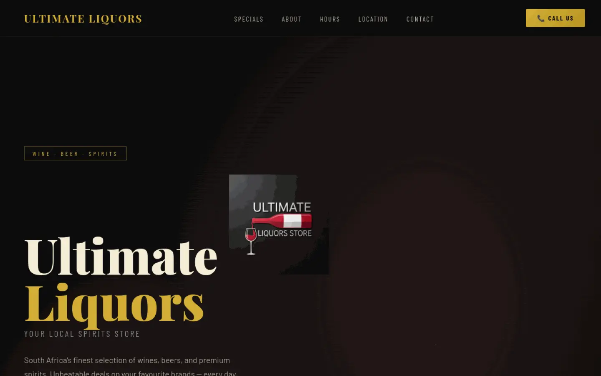
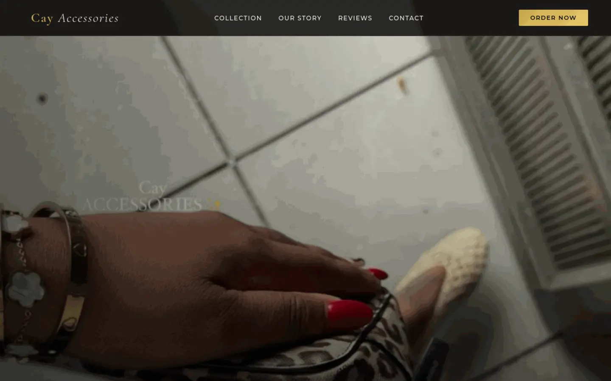
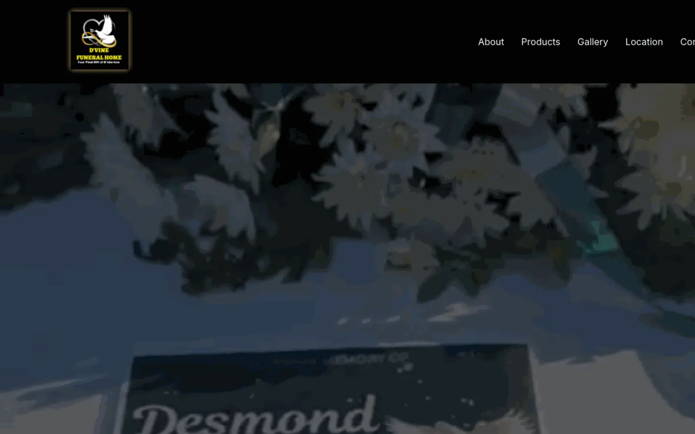
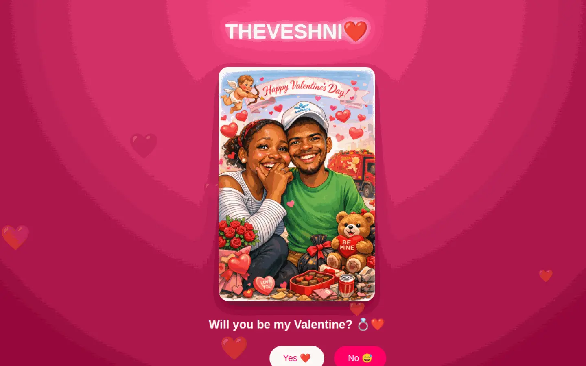
Practical tools
Software & Automation.
Working browser tools for practical business workflows.
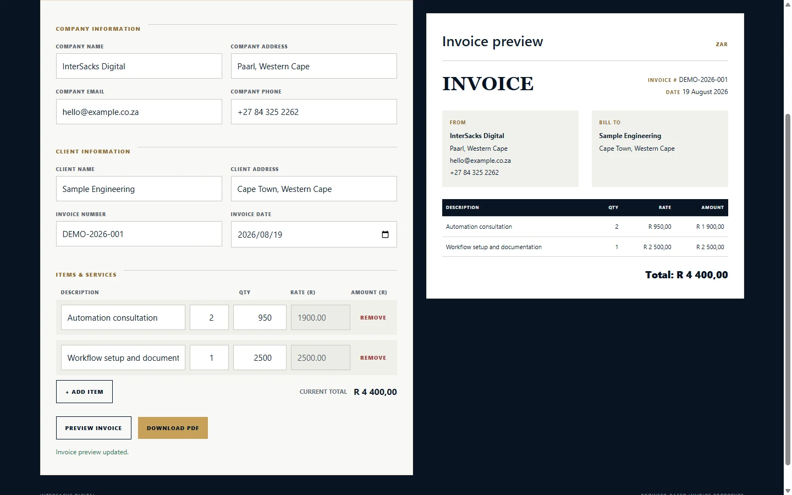
Working Prototype
Invoice Generator
A browser-based business tool for creating itemized invoices, calculating totals, previewing results, and downloading PDF invoices.